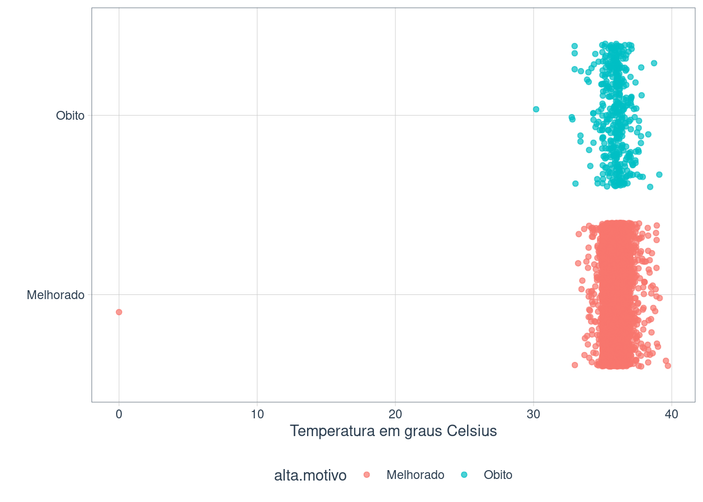
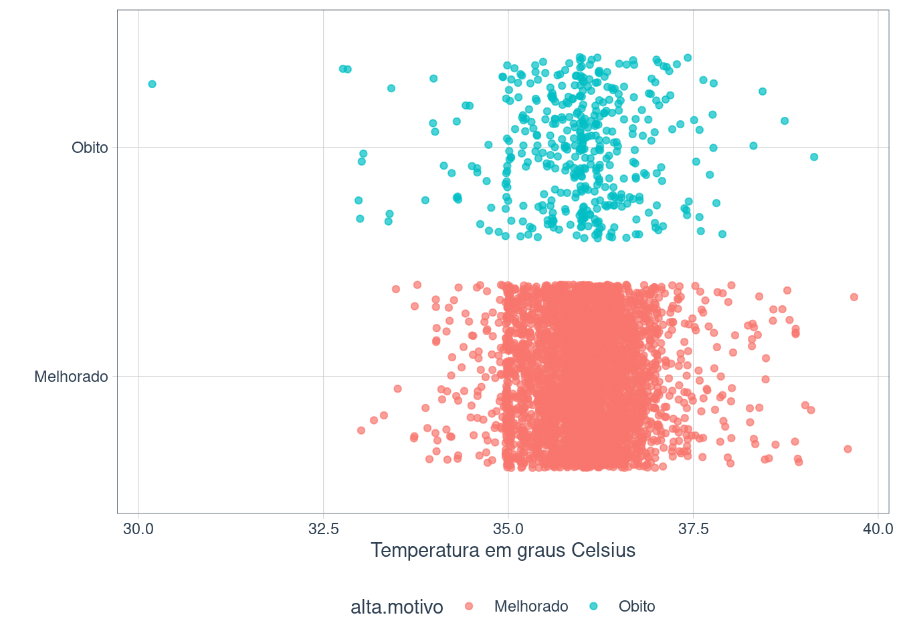
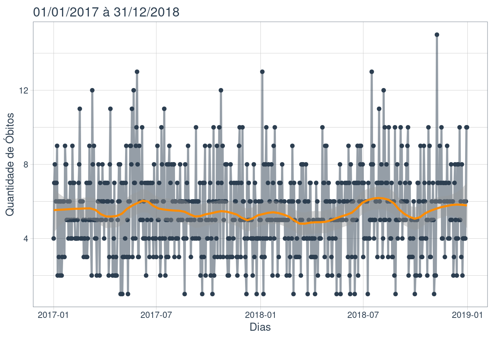
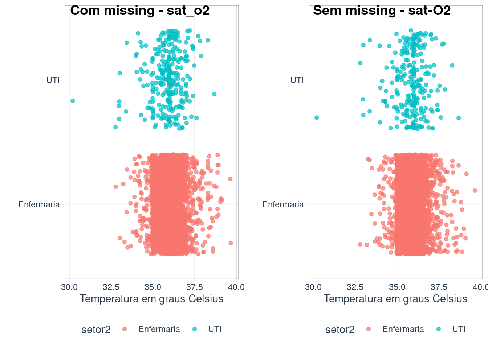
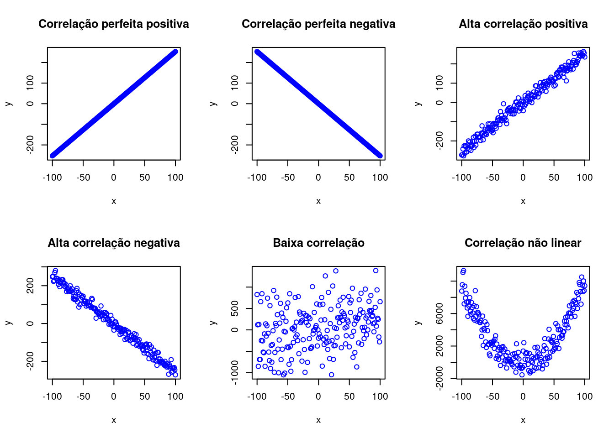
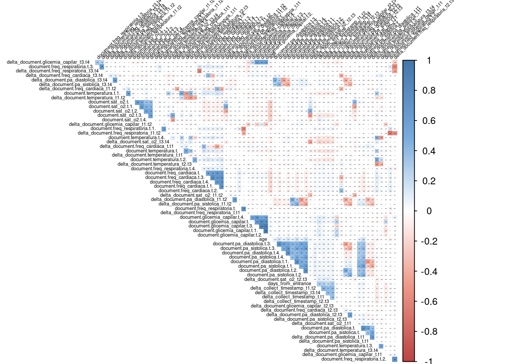

Comandos do R utilizados nas aulas
Coleta de dados

Coletando dados do S3 AWS
#### Carrega o pacote para acessar s3 da aws pelo R
library("aws.s3")
#### Credenciais para acessar o S3 na AWS
source('credentials.R')
#### Carregando os dados
save_object(object = 'PA_dataset_2020/PA_DATA.RData',
bucket = 'machine-learning-laura',
file = 'PA_DATA.RData',
region = 'us-east-2')
dir()
load('PA_DATA.RData')
ls()
head(PA_DATA)
dim(PA_DATA)Coletando os dados do Athena - AWS
### Athena - AWS
## ##### Usuário e senha do Athena AWS
source('credentials2.R')
#conexão via drive ODBC
#https://db.rstudio.com/dbi/
con <- DBI::dbConnect(
odbc::odbc(),
Driver = "/opt/simba/athenaodbc/lib/64/libathenaodbc_sb64.so",
S3OutputLocation = "s3://aws.glue.configurations/history.people.old/query_results/",
AwsRegion = "us-east-1",
AuthenticationType = "athena.barletta",
Schema = "history_people_old",
UID = user,
PWD = pass
)
## Lista as tabelas
DBI::dbListTables(con)
# Lista os campos de uma determinada Tabela
DBI::dbListFields(con, "e12_medical_record")
#### Criando as consultas via SQL
df <- dplyr::tbl(con,
dplyr::sql("SELECT atendimento_id,
date,
alta_data,
alta_motivo,
data_entrada,
data_nasc,
paciente_id,
setor_id,
setor_nome,
sexo,
clinica,
convenio_nome,
doenca_id,
doenca_nome,
tipo_atendimento
FROM e12_medical_record as t1
LEFT JOIN e12_medical_record_doencas as t2
ON t1.oid = t2.oid LIMIT 100")
)
head(df)
class(df)
df <- data.frame(df)
dim(df)
names(df)Pré-processamento dos dados
Carregando os dados - Dados de crédito
library(scorecard)
library(tidyverse)
data('germancredit')
germancredit$ID <- 1:dim(germancredit)[1]
head(germancredit[,c(2,5,11,20:22)], n = 5) duration.in.month credit.amount present.residence.since foreign.worker
1 6 1169 4 yes
2 48 5951 2 yes
3 12 2096 3 yes
4 42 7882 4 yes
5 24 4870 4 yes
creditability ID
1 good 1
2 bad 2
3 good 3
4 good 4
5 bad 5Carregando os dados - Dados de hospital
url <- 'https://felipebarletta.github.io/DAEST/hospital.csv'
dados <- read.csv(url,
h = TRUE,
sep = '\t')Gráfico idade vs desfecho
library(ggplot2)
ggplot(dados, aes(idade, fill = alta.motivo, colour = alta.motivo)) +
geom_density(alpha= 0.1, fill = 'white') +
xlab('Idade em anos') +
ylab('Densidade') +
theme_tq()Criando uma nova característica - faixa etária
dados$faixa_etaria <- ifelse(dados$idade > 55,
">55 anos",
"<=55 anos")Gráfico com a nova característica
ggplot(dados,
aes(y = factor(alta.motivo),
x = idade,
color = faixa_etaria)) +
geom_jitter(alpha = 0.7,
size = 1.5) +
labs(x = "Idade em anos",
y = "") +
theme_tq()
Tabela de frequência - alta vs faixa etária
table(dados$alta.motivo,dados$faixa_etaria)
<=55 anos >55 anos
Melhorado 2830 1742
Obito 101 328Gráfico Temperatura do paciente vs desfecho
ggplot(dados,
aes(y = factor(alta.motivo),
x = temperatura,
color = alta.motivo)) +
geom_jitter(alpha = 0.7,
size = 1.5) +
labs(x = "Temperatura em graus Celsius",
y = "") +
theme_tq()
Filtrando out-lier - Obtendo uma nova amostra
dados2 <- dados %>%
filter(temperatura > 0)
ggplot(dados2,
aes(y = factor(alta.motivo),
x = temperatura,
color = alta.motivo)) +
geom_jitter(alpha = 0.7,
size = 1.5) +
labs(x = "Temperatura em graus Celsius",
y = "") +
theme_tq()
Dados - hospital2
## Carregando os dados
load('dados3.RData')
## Formatando a data
dados3$data <- as.Date(dados3$date,
format = "%Y-%m-%d",
origin="2016-01-01")
## Filtrando apenas classes óbito(1)
dados4 <- dados3 %>%
filter(alta.motivo == 1)Resumindo as quantidades de de óbito por dia
df <- data.frame(table(dados4$data))
colnames(df) <- c('Dia','Quantidade')
df$Dia <- as.Date(df$Dia,
format = "%Y-%m-%d",
origin="2016-01-01")
head(df) Dia Quantidade
1 2014-01-06 3
2 2014-01-07 7
3 2014-01-08 11
4 2014-01-09 5
5 2014-01-10 8
6 2014-01-11 9Gráfico temporal de óbitos diários
library(ggplot2)
library(cowplot)
library(timetk)
library(tidyquant)
library(tibbletime)
# Axis limits c(min, max)
min <- min(df$Dia)
max <- max(df$Dia)
seg <-as.Date(min+480)
df <- as_tbl_time(df,index = Dia)
#### zoom
v3 <- df %>%
ggplot(aes(x=Dia, y=Quantidade)) +
geom_line(color = palette_light()[[1]], alpha = 0.5, size=1) +
geom_point(color = palette_light()[[1]]) +
geom_smooth(method = "loess", span = 0.2, se = TRUE, colour='darkorange') +
theme_tq() +
labs(title = "",
caption = "") + xlab("Dias") + ylab("Quantidade de Óbitos")
v3Selecionando uma amostra para visualização melhor
#### zoom
v4 <- df %>%
filter_time("2017-01-01" ~ "2018-12-31") %>%
ggplot(aes(x=Dia, y=Quantidade)) +
geom_line(color = palette_light()[[1]], alpha = 0.5, size=1) +
geom_point(color = palette_light()[[1]]) +
geom_smooth(method = "loess", span = 0.2, se = TRUE, colour='darkorange') +
theme_tq() +
labs(title = "01/01/2017 à 31/12/2018",
caption = "") +
xlab("Dias") +
ylab("Quantidade de Óbitos")
v4
Crindo uma característica nova - Dias da semana
df$w <- weekdays(df$Dia)Selecionando pacientes com alta
dados4 <- dados3 %>%
filter(alta.motivo == 0)
df <- data.frame(table(dados4$data))
colnames(df) <- c('Dia','Quantidade')
df$Dia <- as.Date(df$Dia,
format = "%Y-%m-%d",
origin="2016-01-01")
# Axis limits c(min, max)
min <- min(df$Dia)
max <- max(df$Dia)
seg <-as.Date(min+480)
df <- as_tbl_time(df,index = Dia)
#### zoom
v3 <- df %>%
filter_time("2017-01-01" ~ "2018-12-31") %>%
ggplot(aes(x=Dia, y=Quantidade)) +
geom_line(color = palette_light()[[1]], alpha = 0.5, size=1) +
geom_point(color = palette_light()[[1]]) +
geom_smooth(method = "loess", span = 0.2, se = TRUE, colour='darkorange') +
theme_tq() +
labs(title = "01/01/2017 à 31/12/2018",
caption = "") +
xlab("Dias") +
ylab("Quantidade de Alta")
v3Mediana da quantidade de alta vs dia da semana
df$w <- weekdays(df$Dia)
tapply(df$Quantidade,df$w, median)domingo quarta quinta sábado segunda sexta terça
61 144 148 107 97 174 135 Missing values (valores faltantes)
library(DataExplorer)
plot_missing(dados[,3:8])Criando uma nova caractrística - variável dicotômica UTI/Enfermaria
table(dados$setor)
1AP1 1AP2 1AP2 - 126 2AP1 2AP2 3AP1
1 59 347 19 51 985 607
3AP2 3AP3 3AP3 - EPI 4AP1 4AP2 SEMI-CO UIP
298 677 147 1034 475 25 2
UTIC UTIG UTIP
66 174 34 dados$setor2 <- ifelse(dados$setor %in% c('UTIC',
'UTIG',
'UTIP'),
'UTI',
'Enfermaria')
table(dados$setor2)
Enfermaria UTI
4727 274 dados2 <- dados %>%
filter(temperatura > 0)
uti1 <- ggplot(dados2, aes(y = factor(setor2),
x = temperatura,
color = setor2)) +
geom_jitter(alpha = 0.7, size = 1.5) +
labs(x = "Temperatura em graus Celsius", y = "") +
theme_tq()
idade2 <- dados2 %>%
filter(!is.na(sat_o2))
uti2 <- ggplot(idade2, aes(y = factor(setor2), x = temperatura, color = setor2)) +
geom_jitter(alpha = 0.7,size = 1.5) +
labs(x = "Temperatura em graus Celsius", y = "") +
theme_tq()
cowplot::plot_grid(uti1,
uti2,
labels = c('Com missing - sat_o2',
'Sem missing - sat-O2'))
Distribuição do desfecho na UTI
Com missing - sat_o2
round(prop.table(table(dados$alta.motivo[dados$setor2 == 'UTI'])),4)
Melhorado Obito
0.0438 0.9562 Sem missing - sat_o2
round(prop.table(table(idade2$alta.motivo[idade2$setor2 == 'UTI'])),4)
Melhorado Obito
0.0412 0.9588 Exemplo - dados faltantes
p1 <- ggplot(dados, aes(temperatura, fill = alta.motivo, colour = alta.motivo)) +
geom_density(alpha= 0.1, fill = 'white') +
xlab('Temperatura em graus Celsius') +
ylab('Densidade') +
theme_tq()
idade2 <- dados %>%
filter(!is.na(sat_o2))
p2 <- ggplot(idade2, aes(temperatura, fill = alta.motivo, colour = alta.motivo)) +
geom_density(alpha= 0.1, fill = 'white') +
xlab('Temperatura em graus Celsius') +
ylab('Densidade') +
theme_tq()
cowplot::plot_grid(p1,
p2,
labels = c('Com missing',
'Sem missing'))Imputação
- Algoritmo KNN (k-nearest neighbors)
Recebe um dado não classificado;
Define o tamanho da vizinhança (K);
Mede a distância (Euclidiana) do novo; dado com todos os outros dados que já estão classificados;
Obtém a menor ou menores distâncias;
Verifica o valor de cada da um dos dados que tiveram a menor distância;
Toma como resultado o valor que mais apareceu dentre os dados que tiveram as menores distâncias.
library(caret)
missingdata <- preProcess(dados, method=c('scale','knnImpute'))
library(RANN) # library for knnInpute
NewData <- predict(missingdata,
newdata = dados)
#anyNA(NewData)
p1 <- ggplot(dados, aes(temperatura, fill = alta.motivo, colour = alta.motivo)) +
geom_density(alpha= 0.1, fill = 'white') +
xlab('Temperatura em graus Celsius') +
ylab('Densidade') +
theme_tq()
p2 <- ggplot(NewData, aes(temperatura, fill = alta.motivo, colour = alta.motivo)) +
geom_density(alpha= 0.1, fill = 'white') +
xlab('Temperatura em graus Celsius') +
ylab('Densidade') +
theme_tq()
cowplot::plot_grid(p1,
p2,
labels = c('Com missing',
'Sem missing'))Dados desbalanceados
ggplot(germancredit, aes(creditability)) +
geom_bar() +
theme_tq()ggplot(dados, aes(alta.motivo)) +
geom_bar()+
theme_tq()Correlação
- Exemplos de correlação
# Diagrama de dispersão
# Plotando todos no mesmo gráfico
par(mfrow=c(2,3))
# Correlação perfeita positiva
x<-seq(-100, 100)
y1<-x*2.53
plot(x, y1, main = "Correlação perfeita positiva",ylab = "y",col="blue")
# Correlação perfeita negativa
x<-seq(-100, 100)
y2<- -x*2.53
plot(x, y2, main = "Correlação perfeita negativa",ylab = "y",col="blue")
# Alta correlação positiva
y3<-rnorm(y1,y1,20)
plot(x,y3,main="Alta correlação positiva",ylab = "y",col="blue")
# Alta correlação
y4<-rnorm(y1,(-1)*y1,20)
plot(x,y4,main="Alta correlação negativa",ylab = "y",col="blue")
# Baixa correlação positiva
y5<-rnorm(y1,y1,500)
plot(x,y5,main="Baixa correlação",ylab = "y",col="blue")
# Correlação não linear
y6<- rnorm(x, x^2, 1000)
plot(x,y6,main="Correlação não linear",ylab = "y",col="blue")
Matriz de correlação
x <- dados[,c(1,3:8)]
#corrplot::corrplot(cor(na.omit(x)), method = 'number',type='upper')
cor.mtest <- function(mat, ...) {
mat <- as.matrix(mat)
n <- ncol(mat)
p.mat<- matrix(NA, n, n)
diag(p.mat) <- 0
for (i in 1:(n - 1)) {
for (j in (i + 1):n) {
tmp <- cor.test(mat[, i], mat[, j], ...)
p.mat[i, j] <- p.mat[j, i] <- tmp$p.value
}
}
colnames(p.mat) <- rownames(p.mat) <- colnames(mat)
p.mat
}
# matrix of the p-value of the correlation
p.mat <- cor.mtest(na.omit(x))
#head(p.mat[, 1:5])
col <- colorRampPalette(c("#BB4444", "#EE9988", "#FFFFFF", "#77AADD", "#4477AA"))
corrplot::corrplot(cor(na.omit(x)), method="color", col=col(200),
type="upper", order="hclust",
addCoef.col = "black", # Add coefficient of correlation
tl.col="black", tl.srt=45, #Text label color and rotation
# Combine with significance
p.mat = p.mat, sig.level = 0.05, insig = "blank",
# hide correlation coefficient on the principal diagonal
diag=FALSE
)Análise de Componentes principais
Suponha um vetor de características \(X_1, X_2,...,X_p\)
\[Z_k = \phi_{1k}X_1 + \phi_{2k}X_2 +...+ \phi_{pk}X_p\]
A variância total dos dados é definida como:
\[\displaystyle{\sum_{j=1}^p}Var(Z_j) = \lambda_1+\lambda_2+...+\lambda_p\]
Assim, a proporção da variância explicada pela j-ésima componente principal é dada por:
\[ \displaystyle{\frac{\lambda_j}{\lambda_1+\lambda_2+...+\lambda_j}}\]
Os dados usados nesse exemplo podem ser encontrados em https://github.com/laura-health/cbms2020
dados <- read.csv('heg_sample_data.csv',
header = TRUE,
sep = ',')
dim(dados)[1] 13652 73head(dados[,1:6]) X days_from_entrance age document.sexo UTI
1 0 0.4811600 -0.4303752 1 0
2 1 1.8376946 0.2301751 1 0
3 2 0.2268098 -0.7193659 1 0
4 3 -0.3666741 1.7164132 1 0
5 4 -0.3666741 1.2622849 0 0
6 5 -0.2818907 -0.8432191 1 0
delta_collect_timestamp_t.t1
1 0.1814797
2 1.2013381
3 2.0494973
4 1.0380565
5 0.8794738
6 1.0424826library(dplyr)
dados2 <- dados %>%
select(-c('X',
'document.sexo',
'UTI',
'outcome')
)
#### Matriz de covariância
S <- round(cov(dados2),2)
dim(S)[1] 69 69S[1:3,1:3] days_from_entrance age
days_from_entrance 2.07 -0.01
age -0.01 0.59
delta_collect_timestamp_t.t1 0.64 0.06
delta_collect_timestamp_t.t1
days_from_entrance 0.64
age 0.06
delta_collect_timestamp_t.t1 4.29#### Matriz de correlação
R <- round(cor(dados2),2)
dim(R)[1] 69 69R[1:5,1:5] days_from_entrance age
days_from_entrance 1.00 -0.01
age -0.01 1.00
delta_collect_timestamp_t.t1 0.22 0.04
delta_collect_timestamp_t1.t2 0.29 0.04
delta_collect_timestamp_t2.t3 0.30 0.04
delta_collect_timestamp_t.t1
days_from_entrance 0.22
age 0.04
delta_collect_timestamp_t.t1 1.00
delta_collect_timestamp_t1.t2 0.40
delta_collect_timestamp_t2.t3 0.38
delta_collect_timestamp_t1.t2
days_from_entrance 0.29
age 0.04
delta_collect_timestamp_t.t1 0.40
delta_collect_timestamp_t1.t2 1.00
delta_collect_timestamp_t2.t3 0.41
delta_collect_timestamp_t2.t3
days_from_entrance 0.30
age 0.04
delta_collect_timestamp_t.t1 0.38
delta_collect_timestamp_t1.t2 0.41
delta_collect_timestamp_t2.t3 1.00### Gráfico da matriz de correlação
cor.mtest <- function(mat, ...) {
mat <- as.matrix(mat)
n <- ncol(mat)
p.mat<- matrix(NA, n, n)
diag(p.mat) <- 0
for (i in 1:(n - 1)) {
for (j in (i + 1):n) {
tmp <- cor.test(mat[, i], mat[, j], ...)
p.mat[i, j] <- p.mat[j, i] <- tmp$p.value
}
}
colnames(p.mat) <- rownames(p.mat) <- colnames(mat)
p.mat
}
# matrix of the p-value of the correlation
p.mat <- cor.mtest(dados2)
#head(p.mat[, 1:5])
col <- colorRampPalette(c("#BB4444", "#EE9988", "#FFFFFF", "#77AADD", "#4477AA"))
corrplot::corrplot(cor(dados2), method="color", col=col(200),
type="upper", order="hclust",
number.cex = .07,
tl.cex = 0.4,
addCoef.col = "black", # Add coefficient of correlation
tl.col="black", tl.srt=45, #Text label color and rotation
# Combine with significance
p.mat = p.mat, sig.level = 0.05, insig = "blank",
# hide correlation coefficient on the principal diagonal
diag=FALSE
)
### Padronizando
z <- scale(dados2)
#R <- round(cor(z),2)
# Autovalores e autovetores
autovalor.autovetor<- eigen(R)
head(autovalor.autovetor$vectors) [,1] [,2] [,3] [,4] [,5] [,6]
[1,] -0.05105621 -0.042076983 0.000545874 -0.08139705 0.06403420 0.1779084
[2,] -0.10230770 -0.005433656 0.116202576 -0.13622080 0.14918267 -0.1259927
[3,] -0.04036232 -0.046036164 0.026911695 -0.12675203 0.07873310 0.2692943
[4,] -0.04910357 -0.084797322 0.043797121 -0.11257048 0.07048544 0.2930954
[5,] -0.04517987 -0.051574039 0.020162080 -0.11931925 0.08401662 0.2697198
[6,] -0.04635546 -0.058275827 0.023960875 -0.11710992 0.07896985 0.2693013
[,7] [,8] [,9] [,10] [,11] [,12]
[1,] 0.008047805 -0.03676643 0.03411967 -0.04978137 0.03443423 -0.14126563
[2,] -0.018176700 -0.02513620 0.00144622 0.00736905 0.01008844 -0.03348035
[3,] 0.021120258 -0.04178843 0.03223004 -0.02931552 0.04956382 -0.19485995
[4,] 0.011118652 -0.03373166 0.03351479 -0.05739411 0.06713068 -0.21665580
[5,] 0.009894598 -0.04305440 0.02370909 -0.05891657 0.05614342 -0.19600466
[6,] 0.018872945 -0.03292394 0.01705792 -0.05933064 0.05027194 -0.21405115
[,13] [,14] [,15] [,16] [,17] [,18]
[1,] 0.020233242 -0.05267993 -0.06525931 0.06940890 0.172121070 0.16662107
[2,] 0.005742711 0.01158876 0.01178394 -0.01275809 0.006710519 -0.03951602
[3,] 0.016023962 -0.05039871 -0.05849199 0.03489621 0.128689046 0.09813076
[4,] 0.023378622 -0.05394288 -0.03936825 0.06249738 0.141525077 0.11328742
[5,] 0.027106044 -0.05012910 -0.07004417 0.06160743 0.167737849 0.13285797
[6,] 0.025298473 -0.07033453 -0.05125297 0.03362663 0.151877503 0.12275200
[,19] [,20] [,21] [,22] [,23] [,24]
[1,] -0.08349526 0.04039622 0.001786102 0.047333856 -0.059671846 -0.02264697
[2,] 0.03929902 0.01087106 0.013971541 -0.001406015 -0.091480465 -0.08811694
[3,] -0.04679158 0.03806451 0.033123494 -0.016115215 -0.009715854 -0.06859228
[4,] -0.05293511 0.06779353 0.028598206 -0.031696038 -0.017457999 -0.08465729
[5,] -0.06015472 0.07344514 0.025309974 0.012661739 -0.010613236 -0.03498874
[6,] -0.05627007 0.04461279 0.037912318 -0.005623846 -0.016429150 -0.04515987
[,25] [,26] [,27] [,28] [,29]
[1,] 0.017390669 0.016994844 0.004785372 0.075146223 0.148390355
[2,] -0.021797075 0.008269755 -0.114138136 -0.006262522 0.039962994
[3,] -0.049370238 -0.009815200 0.023600912 -0.009518550 0.062969605
[4,] 0.009882757 -0.014232842 -0.054079364 -0.028940142 -0.005250541
[5,] -0.046545398 0.015483795 0.021285214 0.051377165 0.059500632
[6,] -0.043286775 -0.005233509 0.008581852 0.036051685 0.064027122
[,30] [,31] [,32] [,33] [,34] [,35]
[1,] 0.12809102 0.61294394 -0.11602332 0.56588032 -0.1418137216 -0.005647748
[2,] -0.28943777 -0.52609600 0.15340326 0.53260093 -0.3343503519 -0.011368933
[3,] -0.06487151 -0.23162310 0.05632851 -0.30163623 0.0394647826 -0.193122994
[4,] -0.02302825 -0.07512682 0.01187665 -0.08018169 0.0059774289 -0.074263276
[5,] -0.06168447 -0.02737890 0.03908695 0.02849697 0.0885033184 0.012936706
[6,] 0.02568664 -0.14408575 0.03364349 -0.19619856 0.0001824666 0.250881069
[,36] [,37] [,38] [,39] [,40] [,41]
[1,] -0.06364399 -0.23233547 -0.08230447 -0.04386169 -0.03308570 -0.0007913217
[2,] 0.01515075 0.01180140 -0.06074033 -0.19936216 -0.22118273 -0.0934756673
[3,] -0.57708053 -0.50791510 -0.13430739 -0.02658979 -0.06104257 0.0254810566
[4,] 0.28836785 -0.01842589 0.78812657 -0.18197741 0.05872339 0.0005266016
[5,] -0.31918155 0.78582199 -0.10505513 0.16486938 0.04220495 -0.0050359856
[6,] 0.63088989 -0.10630924 -0.48984143 0.09308284 -0.01243191 -0.0133159215
[,42] [,43] [,44] [,45] [,46]
[1,] 0.0027251960 3.804461e-03 0.0007117369 0.001705073 0.0034465214
[2,] -0.0002540131 2.976229e-03 0.0064203480 -0.001241409 0.0063934151
[3,] -0.0075679391 -7.807351e-05 0.0001710506 -0.003243636 0.0058458102
[4,] 0.0661747302 1.059764e-03 -0.0139649464 -0.003869914 -0.0021591938
[5,] 0.0191277156 -3.445338e-03 0.0031492544 0.007691371 0.0005985063
[6,] -0.0288320037 3.132167e-03 0.0041189660 0.009992614 -0.0042213894
[,47] [,48] [,49] [,50] [,51]
[1,] -0.003833538 0.0002868931 -0.0019813801 0.0068382471 -0.004636065
[2,] -0.002919480 0.0010747855 0.0135762480 0.0031703735 -0.004022353
[3,] -0.006451819 0.0092318536 0.0083766717 0.0005160273 0.001886179
[4,] -0.013476018 -0.0042416912 0.0124247812 0.0078653908 0.005474089
[5,] -0.003001707 0.0033011181 -0.0066834470 -0.0068408684 -0.003417805
[6,] 0.010305505 0.0072840513 0.0006255288 0.0016626801 0.002247778
[,52] [,53] [,54] [,55] [,56]
[1,] 0.0030724733 0.0034170423 0.0003760415 0.007062693 -0.0006974262
[2,] 0.0019258375 0.0072508636 -0.0012003449 0.004693160 0.0024265062
[3,] 0.0003924683 0.0028019161 -0.0085138533 0.001382613 -0.0014645597
[4,] -0.0075932816 -0.0002124565 -0.0021341181 -0.007680362 0.0083905576
[5,] 0.0041744018 0.0131227786 0.0042997699 0.003613776 0.0017698720
[6,] -0.0079085672 0.0009806856 -0.0038249668 -0.012388422 -0.0006483712
[,57] [,58] [,59] [,60] [,61]
[1,] 2.773374e-03 0.004387407 -0.0029744710 -0.003461122 0.0012334997
[2,] -2.003468e-03 0.006764407 -0.0003169845 -0.002074786 0.0003547544
[3,] 5.405684e-03 0.002262689 -0.0016831157 -0.004815113 -0.0100147494
[4,] 8.242377e-03 -0.002724276 -0.0043488970 0.005125377 -0.0145410683
[5,] 8.421986e-05 -0.002810289 -0.0022016789 -0.001589977 -0.0040300706
[6,] 3.562703e-04 0.007752641 -0.0055874396 -0.007186238 0.0025252221
[,62] [,63] [,64] [,65] [,66]
[1,] 0.0021040995 -0.0033139549 0.004545586 0.002275874 -0.0081725017
[2,] 0.0065826805 -0.0006611581 -0.008869717 -0.007485147 0.0034739022
[3,] -0.0011169335 0.0032457616 -0.004627589 0.004063673 0.0012733586
[4,] -0.0057647843 0.0024641309 0.003748269 -0.001769666 0.0003225127
[5,] -0.0000107237 0.0006031211 -0.006069581 0.003890056 0.0122310218
[6,] 0.0054992004 0.0050169739 0.006903840 -0.002233937 -0.0002194624
[,67] [,68] [,69]
[1,] -0.007263713 -0.0004433214 0.005652709
[2,] -0.003464707 -0.0024813837 -0.002530166
[3,] 0.007986709 0.0013410461 0.001879457
[4,] 0.001268314 0.0103984215 -0.004760680
[5,] -0.002659912 -0.0029874229 -0.003134498
[6,] 0.006696754 0.0005707292 -0.009583839head(autovalor.autovetor$values)[1] 5.430517 4.289584 3.966827 3.198286 3.133321 3.027491# Recebendo percentual das variâncias e porcentagem acumulativa
var.porc <- autovalor.autovetor$values / sum(autovalor.autovetor$values)*100
head(var.porc)[1] 7.870314 6.216789 5.749025 4.635197 4.541045 4.387668var.acum <- cumsum(var.porc)
head(var.acum)[1] 7.870314 14.087103 19.836128 24.471325 29.012370 33.400038porc.explic <- round(data.frame(autovalores = autovalor.autovetor$values,
var.porc = var.porc,
var.acum = var.acum), 3)
head(porc.explic,28) autovalores var.porc var.acum
1 5.431 7.870 7.870
2 4.290 6.217 14.087
3 3.967 5.749 19.836
4 3.198 4.635 24.471
5 3.133 4.541 29.012
6 3.027 4.388 33.400
7 2.724 3.949 37.349
8 2.714 3.933 41.282
9 2.278 3.301 44.583
10 2.132 3.090 47.673
11 2.102 3.046 50.719
12 1.948 2.824 53.543
13 1.848 2.678 56.221
14 1.800 2.609 58.830
15 1.754 2.543 61.372
16 1.710 2.479 63.851
17 1.696 2.458 66.309
18 1.647 2.387 68.696
19 1.518 2.199 70.895
20 1.482 2.148 73.043
21 1.362 1.974 75.018
22 1.298 1.881 76.899
23 1.252 1.814 78.713
24 1.223 1.773 80.486
25 1.208 1.751 82.237
26 1.174 1.701 83.938
27 1.055 1.529 85.467
28 1.050 1.521 86.988plot(porc.explic$autovalores,
type = "b",
ylab = "Valor Autovalores",
xlab = "Número de autovalores",
axes = T)
abline(h=1, col=2, lwd=2)# Matriz e dos coeficientes das combinações lineares referentes às componentes principais Yk
e <- round(as.matrix(autovalor.autovetor$vector),3)
head(e) [,1] [,2] [,3] [,4] [,5] [,6] [,7] [,8] [,9] [,10] [,11]
[1,] -0.051 -0.042 0.001 -0.081 0.064 0.178 0.008 -0.037 0.034 -0.050 0.034
[2,] -0.102 -0.005 0.116 -0.136 0.149 -0.126 -0.018 -0.025 0.001 0.007 0.010
[3,] -0.040 -0.046 0.027 -0.127 0.079 0.269 0.021 -0.042 0.032 -0.029 0.050
[4,] -0.049 -0.085 0.044 -0.113 0.070 0.293 0.011 -0.034 0.034 -0.057 0.067
[5,] -0.045 -0.052 0.020 -0.119 0.084 0.270 0.010 -0.043 0.024 -0.059 0.056
[6,] -0.046 -0.058 0.024 -0.117 0.079 0.269 0.019 -0.033 0.017 -0.059 0.050
[,12] [,13] [,14] [,15] [,16] [,17] [,18] [,19] [,20] [,21] [,22]
[1,] -0.141 0.020 -0.053 -0.065 0.069 0.172 0.167 -0.083 0.040 0.002 0.047
[2,] -0.033 0.006 0.012 0.012 -0.013 0.007 -0.040 0.039 0.011 0.014 -0.001
[3,] -0.195 0.016 -0.050 -0.058 0.035 0.129 0.098 -0.047 0.038 0.033 -0.016
[4,] -0.217 0.023 -0.054 -0.039 0.062 0.142 0.113 -0.053 0.068 0.029 -0.032
[5,] -0.196 0.027 -0.050 -0.070 0.062 0.168 0.133 -0.060 0.073 0.025 0.013
[6,] -0.214 0.025 -0.070 -0.051 0.034 0.152 0.123 -0.056 0.045 0.038 -0.006
[,23] [,24] [,25] [,26] [,27] [,28] [,29] [,30] [,31] [,32]
[1,] -0.060 -0.023 0.017 0.017 0.005 0.075 0.148 0.128 0.613 -0.116
[2,] -0.091 -0.088 -0.022 0.008 -0.114 -0.006 0.040 -0.289 -0.526 0.153
[3,] -0.010 -0.069 -0.049 -0.010 0.024 -0.010 0.063 -0.065 -0.232 0.056
[4,] -0.017 -0.085 0.010 -0.014 -0.054 -0.029 -0.005 -0.023 -0.075 0.012
[5,] -0.011 -0.035 -0.047 0.015 0.021 0.051 0.060 -0.062 -0.027 0.039
[6,] -0.016 -0.045 -0.043 -0.005 0.009 0.036 0.064 0.026 -0.144 0.034
[,33] [,34] [,35] [,36] [,37] [,38] [,39] [,40] [,41] [,42]
[1,] 0.566 -0.142 -0.006 -0.064 -0.232 -0.082 -0.044 -0.033 -0.001 0.003
[2,] 0.533 -0.334 -0.011 0.015 0.012 -0.061 -0.199 -0.221 -0.093 0.000
[3,] -0.302 0.039 -0.193 -0.577 -0.508 -0.134 -0.027 -0.061 0.025 -0.008
[4,] -0.080 0.006 -0.074 0.288 -0.018 0.788 -0.182 0.059 0.001 0.066
[5,] 0.028 0.089 0.013 -0.319 0.786 -0.105 0.165 0.042 -0.005 0.019
[6,] -0.196 0.000 0.251 0.631 -0.106 -0.490 0.093 -0.012 -0.013 -0.029
[,43] [,44] [,45] [,46] [,47] [,48] [,49] [,50] [,51] [,52]
[1,] 0.004 0.001 0.002 0.003 -0.004 0.000 -0.002 0.007 -0.005 0.003
[2,] 0.003 0.006 -0.001 0.006 -0.003 0.001 0.014 0.003 -0.004 0.002
[3,] 0.000 0.000 -0.003 0.006 -0.006 0.009 0.008 0.001 0.002 0.000
[4,] 0.001 -0.014 -0.004 -0.002 -0.013 -0.004 0.012 0.008 0.005 -0.008
[5,] -0.003 0.003 0.008 0.001 -0.003 0.003 -0.007 -0.007 -0.003 0.004
[6,] 0.003 0.004 0.010 -0.004 0.010 0.007 0.001 0.002 0.002 -0.008
[,53] [,54] [,55] [,56] [,57] [,58] [,59] [,60] [,61] [,62]
[1,] 0.003 0.000 0.007 -0.001 0.003 0.004 -0.003 -0.003 0.001 0.002
[2,] 0.007 -0.001 0.005 0.002 -0.002 0.007 0.000 -0.002 0.000 0.007
[3,] 0.003 -0.009 0.001 -0.001 0.005 0.002 -0.002 -0.005 -0.010 -0.001
[4,] 0.000 -0.002 -0.008 0.008 0.008 -0.003 -0.004 0.005 -0.015 -0.006
[5,] 0.013 0.004 0.004 0.002 0.000 -0.003 -0.002 -0.002 -0.004 0.000
[6,] 0.001 -0.004 -0.012 -0.001 0.000 0.008 -0.006 -0.007 0.003 0.005
[,63] [,64] [,65] [,66] [,67] [,68] [,69]
[1,] -0.003 0.005 0.002 -0.008 -0.007 0.000 0.006
[2,] -0.001 -0.009 -0.007 0.003 -0.003 -0.002 -0.003
[3,] 0.003 -0.005 0.004 0.001 0.008 0.001 0.002
[4,] 0.002 0.004 -0.002 0.000 0.001 0.010 -0.005
[5,] 0.001 -0.006 0.004 0.012 -0.003 -0.003 -0.003
[6,] 0.005 0.007 -0.002 0.000 0.007 0.001 -0.010e[c(1:3,28),c(1:3,28)] [,1] [,2] [,3] [,4]
[1,] -0.051 -0.042 0.001 0.075
[2,] -0.102 -0.005 0.116 -0.006
[3,] -0.040 -0.046 0.027 -0.010
[4,] -0.336 0.011 -0.051 -0.013## C1 = -0.051*z1 -0.102*z2 -0.04*z3 ...-0.336*z28
## C28 = -0.336*z1 + 0.011+z2 .....-0.013*z28
V <- round(diag(autovalor.autovetor$values),3)
head(V) [,1] [,2] [,3] [,4] [,5] [,6] [,7] [,8] [,9] [,10] [,11] [,12] [,13]
[1,] 5.431 0.00 0.000 0.000 0.000 0.000 0 0 0 0 0 0 0
[2,] 0.000 4.29 0.000 0.000 0.000 0.000 0 0 0 0 0 0 0
[3,] 0.000 0.00 3.967 0.000 0.000 0.000 0 0 0 0 0 0 0
[4,] 0.000 0.00 0.000 3.198 0.000 0.000 0 0 0 0 0 0 0
[5,] 0.000 0.00 0.000 0.000 3.133 0.000 0 0 0 0 0 0 0
[6,] 0.000 0.00 0.000 0.000 0.000 3.027 0 0 0 0 0 0 0
[,14] [,15] [,16] [,17] [,18] [,19] [,20] [,21] [,22] [,23] [,24] [,25]
[1,] 0 0 0 0 0 0 0 0 0 0 0 0
[2,] 0 0 0 0 0 0 0 0 0 0 0 0
[3,] 0 0 0 0 0 0 0 0 0 0 0 0
[4,] 0 0 0 0 0 0 0 0 0 0 0 0
[5,] 0 0 0 0 0 0 0 0 0 0 0 0
[6,] 0 0 0 0 0 0 0 0 0 0 0 0
[,26] [,27] [,28] [,29] [,30] [,31] [,32] [,33] [,34] [,35] [,36] [,37]
[1,] 0 0 0 0 0 0 0 0 0 0 0 0
[2,] 0 0 0 0 0 0 0 0 0 0 0 0
[3,] 0 0 0 0 0 0 0 0 0 0 0 0
[4,] 0 0 0 0 0 0 0 0 0 0 0 0
[5,] 0 0 0 0 0 0 0 0 0 0 0 0
[6,] 0 0 0 0 0 0 0 0 0 0 0 0
[,38] [,39] [,40] [,41] [,42] [,43] [,44] [,45] [,46] [,47] [,48] [,49]
[1,] 0 0 0 0 0 0 0 0 0 0 0 0
[2,] 0 0 0 0 0 0 0 0 0 0 0 0
[3,] 0 0 0 0 0 0 0 0 0 0 0 0
[4,] 0 0 0 0 0 0 0 0 0 0 0 0
[5,] 0 0 0 0 0 0 0 0 0 0 0 0
[6,] 0 0 0 0 0 0 0 0 0 0 0 0
[,50] [,51] [,52] [,53] [,54] [,55] [,56] [,57] [,58] [,59] [,60] [,61]
[1,] 0 0 0 0 0 0 0 0 0 0 0 0
[2,] 0 0 0 0 0 0 0 0 0 0 0 0
[3,] 0 0 0 0 0 0 0 0 0 0 0 0
[4,] 0 0 0 0 0 0 0 0 0 0 0 0
[5,] 0 0 0 0 0 0 0 0 0 0 0 0
[6,] 0 0 0 0 0 0 0 0 0 0 0 0
[,62] [,63] [,64] [,65] [,66] [,67] [,68] [,69]
[1,] 0 0 0 0 0 0 0 0
[2,] 0 0 0 0 0 0 0 0
[3,] 0 0 0 0 0 0 0 0
[4,] 0 0 0 0 0 0 0 0
[5,] 0 0 0 0 0 0 0 0
[6,] 0 0 0 0 0 0 0 0escores <- round(t(e) %*% t(z),2)
dim(t(escores))[1] 13652 69head(escores[,1:6]) [,1] [,2] [,3] [,4] [,5] [,6]
[1,] 0.38 2.40 0.33 -2.98 2.51 1.18
[2,] -0.08 -1.27 -0.46 -0.43 0.44 -0.15
[3,] -0.45 -2.55 -0.38 -1.96 2.19 -0.16
[4,] -0.26 -0.09 -0.96 -0.91 0.34 -0.28
[5,] 0.77 1.55 -0.38 -0.51 1.07 0.64
[6,] -0.18 2.38 1.87 0.78 -0.01 0.11plot(escores[2,] ~ escores[1,], cex = 0.7,
main = "Gráfico dos escores da PC1 e PC2")plot(escores[1,] ~ z[,1], cex = 0.7,
main = "Gráfico dos escores da PC1 e com z1")plot(escores[1,] ~ z[,2], cex = 0.7,
main = "Gráfico dos escores da PC1 e com z2")#### Função do R
PCA <- prcomp(dados2,
scale = TRUE)
names(PCA)[1] "sdev" "rotation" "center" "scale" "x" PCA$sdev^2 [1] 5.4314023492 4.2896089622 3.9615738027 3.2057577985 3.1310001947
[6] 3.0262714518 2.7241689332 2.7126750725 2.2772071251 2.1424552394
[11] 2.1019462990 1.9423533247 1.8523071629 1.7945342339 1.7520367405
[16] 1.7140479589 1.6992257681 1.6460588344 1.5193445198 1.4800211782
[21] 1.3572174551 1.2985385716 1.2558588555 1.2231389754 1.2020839636
[26] 1.1715666090 1.0613411754 1.0477436481 0.9572828657 0.9096964631
[31] 0.8306378261 0.7892894241 0.7515825307 0.7384669771 0.6649730292
[36] 0.6300564584 0.6031315394 0.5375747631 0.5138234145 0.4545430167
[41] 0.3226202962 0.1112179258 0.0288202665 0.0246479157 0.0160583919
[46] 0.0120995490 0.0078394157 0.0071548607 0.0071198302 0.0061933343
[51] 0.0061080434 0.0060527284 0.0049836180 0.0048577070 0.0042418617
[56] 0.0038361547 0.0029949101 0.0028679836 0.0026861276 0.0023773931
[61] 0.0019495942 0.0017774265 0.0016408416 0.0014775163 0.0014198731
[66] 0.0013207611 0.0012087153 0.0010493437 0.0008331032head(PCA$rotation) PC1 PC2 PC3 PC4
days_from_entrance 0.05196031 -0.039923118 -0.0006906079 0.07630754
age 0.10145881 -0.005528985 -0.1133311393 0.13066939
delta_collect_timestamp_t.t1 0.04051769 -0.045237804 -0.0265228270 0.12262810
delta_collect_timestamp_t1.t2 0.04894813 -0.084595216 -0.0433458765 0.10845428
delta_collect_timestamp_t2.t3 0.04437257 -0.053054762 -0.0206716266 0.11252122
delta_collect_timestamp_t3.t4 0.04659367 -0.058285338 -0.0244751443 0.11141296
PC5 PC6 PC7 PC8
days_from_entrance -0.07056360 0.1780909 -0.01559373 0.03297033
age -0.15315485 -0.1280307 0.01536030 0.02747249
delta_collect_timestamp_t.t1 -0.09038343 0.2686814 -0.02854560 0.03383371
delta_collect_timestamp_t1.t2 -0.08200748 0.2940451 -0.02063265 0.02818113
delta_collect_timestamp_t2.t3 -0.09460226 0.2694710 -0.01923088 0.04041070
delta_collect_timestamp_t3.t4 -0.09055836 0.2700253 -0.02640218 0.02752014
PC9 PC10 PC11 PC12
days_from_entrance -0.029761673 0.04495629 -0.038128953 0.14412414
age -0.003217278 -0.00557327 -0.008772432 0.03243933
delta_collect_timestamp_t.t1 -0.031967013 0.01812432 -0.049620121 0.19060340
delta_collect_timestamp_t1.t2 -0.029834478 0.04338572 -0.069199653 0.21792473
delta_collect_timestamp_t2.t3 -0.020346299 0.04949604 -0.061655740 0.19238718
delta_collect_timestamp_t3.t4 -0.014998919 0.04920538 -0.057942047 0.21149034
PC13 PC14 PC15 PC16
days_from_entrance -0.01335699 0.05562987 -0.078795060 -0.028155007
age -0.00396641 -0.01543216 0.007867916 0.009492862
delta_collect_timestamp_t.t1 -0.01113659 0.04890618 -0.069740796 -0.003670364
delta_collect_timestamp_t1.t2 -0.02239938 0.05083190 -0.057414259 -0.023990659
delta_collect_timestamp_t2.t3 -0.01773333 0.04844542 -0.088537099 -0.024915012
delta_collect_timestamp_t3.t4 -0.02301447 0.06847468 -0.065099651 0.002861046
PC17 PC18 PC19 PC20
days_from_entrance -0.175468710 0.16229383 -0.09146901 0.047876543
age -0.002301815 -0.04236558 0.04221746 0.007673696
delta_collect_timestamp_t.t1 -0.128314327 0.09231898 -0.04873960 0.038735845
delta_collect_timestamp_t1.t2 -0.149409347 0.11222205 -0.05899134 0.067415527
delta_collect_timestamp_t2.t3 -0.172035185 0.13471399 -0.06484658 0.070802431
delta_collect_timestamp_t3.t4 -0.151094359 0.12286001 -0.06432952 0.046083010
PC21 PC22 PC23 PC24
days_from_entrance -0.01179697 -0.033147459 0.06428777 0.02312760
age -0.01520154 0.006227123 0.09868384 0.09121471
delta_collect_timestamp_t.t1 -0.02947716 0.018182298 0.01238781 0.06166655
delta_collect_timestamp_t1.t2 -0.02813511 0.030227405 0.01209530 0.07712637
delta_collect_timestamp_t2.t3 -0.02124114 -0.012969914 0.01878862 0.03651303
delta_collect_timestamp_t3.t4 -0.03310073 0.006020402 0.01414122 0.03945137
PC25 PC26 PC27
days_from_entrance 0.002315443 0.015760436 -0.02661905
age -0.030233418 0.004818914 0.10349342
delta_collect_timestamp_t.t1 -0.049303355 -0.014803282 -0.02351533
delta_collect_timestamp_t1.t2 0.002183913 -0.018535791 0.06026027
delta_collect_timestamp_t2.t3 -0.049832905 0.007899967 -0.03603891
delta_collect_timestamp_t3.t4 -0.044674522 -0.006474177 -0.01444918
PC28 PC29 PC30 PC31
days_from_entrance -0.069938547 0.148237023 -0.10726298 -0.60544996
age -0.024438187 0.007275593 0.27677323 0.53435193
delta_collect_timestamp_t.t1 0.003943374 0.074965963 0.04915241 0.25865223
delta_collect_timestamp_t1.t2 0.016242944 -0.010552786 0.02460930 0.08042225
delta_collect_timestamp_t2.t3 -0.052474062 0.072178983 0.05628093 0.01050646
delta_collect_timestamp_t3.t4 -0.026219239 0.054339527 -0.03009388 0.14465076
PC32 PC33 PC34 PC35
days_from_entrance 0.15407728 0.45076070 -0.36146603 0.01759927
age -0.15330274 0.37223254 -0.51059924 0.00235086
delta_collect_timestamp_t.t1 -0.05875678 -0.24197090 0.18986511 -0.18547715
delta_collect_timestamp_t1.t2 -0.02648968 -0.06235426 0.04057180 -0.03834587
delta_collect_timestamp_t2.t3 -0.05395764 0.05409146 0.05569101 -0.04649620
delta_collect_timestamp_t3.t4 -0.03158604 -0.17876561 0.06150562 0.23923342
PC36 PC37 PC38 PC39
days_from_entrance 0.08033295 -0.258514607 -0.05318645 0.04376065
age -0.01350317 -0.005574151 -0.05682838 0.20184790
delta_collect_timestamp_t.t1 0.57466697 -0.509459087 -0.09942670 0.05533638
delta_collect_timestamp_t1.t2 -0.28045769 0.037238803 0.80449070 0.12720484
delta_collect_timestamp_t2.t3 0.29928528 0.785876364 -0.18830821 -0.11756748
delta_collect_timestamp_t3.t4 -0.63523261 -0.146140041 -0.48054319 -0.11201150
PC40 PC41 PC42
days_from_entrance -0.02739884 0.0069606680 -0.001003420
age -0.20707717 0.1042878410 0.004104837
delta_collect_timestamp_t.t1 -0.03982163 -0.0364793490 0.005831397
delta_collect_timestamp_t1.t2 0.03460870 -0.0017305665 -0.073243774
delta_collect_timestamp_t2.t3 0.03179812 0.0175780037 -0.017761544
delta_collect_timestamp_t3.t4 -0.01089562 0.0004817956 0.031829676
PC43 PC44 PC45
days_from_entrance 0.0007114874 0.0003329649 -0.004745006
age -0.0052490099 -0.0083090983 0.004685340
delta_collect_timestamp_t.t1 0.0011145117 -0.0001945844 0.011623190
delta_collect_timestamp_t1.t2 -0.0003038391 -0.0021057932 -0.001449516
delta_collect_timestamp_t2.t3 0.0003820639 -0.0004094872 0.010145219
delta_collect_timestamp_t3.t4 0.0043300520 -0.0075228473 0.010140364
PC46 PC47 PC48
days_from_entrance 0.002287546 0.001359126 0.0013548831
age -0.004501267 -0.006149090 0.0013348043
delta_collect_timestamp_t.t1 -0.010395929 -0.001246665 0.0023935208
delta_collect_timestamp_t1.t2 -0.015020732 -0.003905707 0.0058048359
delta_collect_timestamp_t2.t3 0.001271326 -0.002566479 0.0019659552
delta_collect_timestamp_t3.t4 0.005699465 -0.008310591 -0.0008489059
PC49 PC50 PC51
days_from_entrance 0.0003472376 0.0007866640 0.001824124
age 0.0001056269 0.0009640343 0.001381613
delta_collect_timestamp_t.t1 -0.0016234769 0.0056681998 0.004987035
delta_collect_timestamp_t1.t2 0.0038990819 0.0057327653 0.006378954
delta_collect_timestamp_t2.t3 -0.0018322524 0.0040873520 0.003912739
delta_collect_timestamp_t3.t4 -0.0061155062 0.0021429075 0.003825289
PC52 PC53 PC54
days_from_entrance 0.003812758 0.0023914587 0.0037336226
age -0.002002474 -0.0001978884 -0.0030440630
delta_collect_timestamp_t.t1 -0.008385249 -0.0005868999 0.0003368973
delta_collect_timestamp_t1.t2 -0.006101757 -0.0058879591 -0.0081367307
delta_collect_timestamp_t2.t3 -0.004591682 0.0039993929 0.0034761929
delta_collect_timestamp_t3.t4 -0.003104374 -0.0037677083 -0.0048857592
PC55 PC56 PC57
days_from_entrance 0.0009680663 -0.005669528 -0.0021049901
age -0.0002002756 -0.001685889 -0.0001896479
delta_collect_timestamp_t.t1 -0.0010141562 -0.001756537 0.0015435182
delta_collect_timestamp_t1.t2 -0.0011882557 -0.001229322 0.0002014796
delta_collect_timestamp_t2.t3 0.0001408403 -0.001493030 0.0026253222
delta_collect_timestamp_t3.t4 -0.0005435875 -0.004211860 0.0018068206
PC58 PC59 PC60
days_from_entrance -0.0012343720 -0.0014698738 -0.0013821217
age -0.0001708861 0.0001059449 -0.0013899694
delta_collect_timestamp_t.t1 0.0000374552 -0.0008699073 -0.0007279017
delta_collect_timestamp_t1.t2 0.0012527270 -0.0007401731 -0.0001552939
delta_collect_timestamp_t2.t3 0.0007260319 -0.0003689523 -0.0007393837
delta_collect_timestamp_t3.t4 0.0006748524 -0.0014237001 -0.0003079648
PC61 PC62 PC63
days_from_entrance -0.0016763528 -0.0004244082 -0.0020579281
age 0.0008454965 -0.0002532596 -0.0007920315
delta_collect_timestamp_t.t1 0.0018963252 0.0003941333 -0.0005601542
delta_collect_timestamp_t1.t2 0.0014208145 0.0002009541 0.0002040305
delta_collect_timestamp_t2.t3 0.0020488054 0.0001499459 0.0002158306
delta_collect_timestamp_t3.t4 0.0021794989 0.0000752500 -0.0010203123
PC64 PC65 PC66
days_from_entrance -0.0021291953 -0.0004190947 -0.0029208591
age -0.0001321222 -0.0003948016 -0.0013135234
delta_collect_timestamp_t.t1 -0.0013928053 -0.0012436905 -0.0015263684
delta_collect_timestamp_t1.t2 -0.0011514860 -0.0004494564 -0.0004132937
delta_collect_timestamp_t2.t3 -0.0010729581 -0.0003996652 -0.0007499189
delta_collect_timestamp_t3.t4 -0.0006943697 -0.0006466756 -0.0002144000
PC67 PC68 PC69
days_from_entrance -0.0007443706 -0.0003380322 -4.665865e-04
age -0.0003206067 0.0002071746 -8.952346e-05
delta_collect_timestamp_t.t1 0.0008852057 -0.0004645072 8.980301e-05
delta_collect_timestamp_t1.t2 0.0008246316 -0.0004928337 8.127307e-05
delta_collect_timestamp_t2.t3 -0.0002934918 0.0004587314 1.369132e-05
delta_collect_timestamp_t3.t4 -0.0004406756 0.0005139809 5.776719e-04summary(PCA)Importance of components:
PC1 PC2 PC3 PC4 PC5 PC6 PC7
Standard deviation 2.33054 2.07114 1.99037 1.79046 1.76946 1.73962 1.65051
Proportion of Variance 0.07872 0.06217 0.05741 0.04646 0.04538 0.04386 0.03948
Cumulative Proportion 0.07872 0.14088 0.19830 0.24476 0.29014 0.33399 0.37348
PC8 PC9 PC10 PC11 PC12 PC13 PC14
Standard deviation 1.64702 1.5090 1.46371 1.44981 1.39368 1.36099 1.33960
Proportion of Variance 0.03931 0.0330 0.03105 0.03046 0.02815 0.02685 0.02601
Cumulative Proportion 0.41279 0.4458 0.47684 0.50731 0.53546 0.56230 0.58831
PC15 PC16 PC17 PC18 PC19 PC20 PC21
Standard deviation 1.32365 1.30922 1.30354 1.28299 1.23262 1.21656 1.16500
Proportion of Variance 0.02539 0.02484 0.02463 0.02386 0.02202 0.02145 0.01967
Cumulative Proportion 0.61370 0.63854 0.66317 0.68702 0.70904 0.73049 0.75016
PC22 PC23 PC24 PC25 PC26 PC27 PC28
Standard deviation 1.13953 1.1207 1.10596 1.09640 1.08239 1.03021 1.02359
Proportion of Variance 0.01882 0.0182 0.01773 0.01742 0.01698 0.01538 0.01518
Cumulative Proportion 0.76898 0.7872 0.80491 0.82233 0.83931 0.85469 0.86988
PC29 PC30 PC31 PC32 PC33 PC34 PC35
Standard deviation 0.97841 0.95378 0.91139 0.88842 0.86694 0.8593 0.81546
Proportion of Variance 0.01387 0.01318 0.01204 0.01144 0.01089 0.0107 0.00964
Cumulative Proportion 0.88375 0.89693 0.90897 0.92041 0.93130 0.9420 0.95164
PC36 PC37 PC38 PC39 PC40 PC41 PC42
Standard deviation 0.79376 0.77662 0.73319 0.71681 0.67420 0.56800 0.33349
Proportion of Variance 0.00913 0.00874 0.00779 0.00745 0.00659 0.00468 0.00161
Cumulative Proportion 0.96077 0.96952 0.97731 0.98475 0.99134 0.99602 0.99763
PC43 PC44 PC45 PC46 PC47 PC48 PC49
Standard deviation 0.16977 0.15700 0.12672 0.11000 0.08854 0.08459 0.08438
Proportion of Variance 0.00042 0.00036 0.00023 0.00018 0.00011 0.00010 0.00010
Cumulative Proportion 0.99805 0.99840 0.99864 0.99881 0.99893 0.99903 0.99913
PC50 PC51 PC52 PC53 PC54 PC55 PC56
Standard deviation 0.07870 0.07815 0.07780 0.07059 0.06970 0.06513 0.06194
Proportion of Variance 0.00009 0.00009 0.00009 0.00007 0.00007 0.00006 0.00006
Cumulative Proportion 0.99922 0.99931 0.99940 0.99947 0.99954 0.99960 0.99966
PC57 PC58 PC59 PC60 PC61 PC62 PC63
Standard deviation 0.05473 0.05355 0.05183 0.04876 0.04415 0.04216 0.04051
Proportion of Variance 0.00004 0.00004 0.00004 0.00003 0.00003 0.00003 0.00002
Cumulative Proportion 0.99970 0.99974 0.99978 0.99982 0.99984 0.99987 0.99989
PC64 PC65 PC66 PC67 PC68 PC69
Standard deviation 0.03844 0.03768 0.03634 0.03477 0.03239 0.02886
Proportion of Variance 0.00002 0.00002 0.00002 0.00002 0.00002 0.00001
Cumulative Proportion 0.99992 0.99994 0.99996 0.99997 0.99999 1.00000biplot(princomp(dados2, cor = T),
pc.biplot = T, cex = 0.8, expand = )Método K-means
Para baizar os dados utilizados nesse exemplo, acesse https://github.com/stedy/Machine-Learning-with-R-datasets ou baixe da aba dados.
dados <- read.csv('snsdata.csv',
h = TRUE)
head(dados) gradyear gender age friends basketball football soccer softball volleyball
1 2006 M 18.982 7 0 0 0 0 0
2 2006 F 18.801 0 0 1 0 0 0
3 2006 M 18.335 69 0 1 0 0 0
4 2006 F 18.875 0 0 0 0 0 0
5 2006 <NA> 18.995 10 0 0 0 0 0
6 2006 F NA 142 0 0 0 0 0
swimming cheerleading baseball tennis sports cute sex sexy hot kissed dance
1 0 0 0 0 0 0 0 0 0 0 1
2 0 0 0 0 0 1 0 0 0 0 0
3 0 0 0 0 0 0 0 0 0 0 0
4 0 0 0 0 0 1 0 0 0 0 0
5 0 0 0 0 0 0 1 0 0 5 1
6 0 0 0 0 0 0 1 0 0 0 0
band marching music rock god church jesus bible hair dress blonde mall
1 0 0 0 0 0 0 0 0 0 0 0 0
2 0 0 2 2 1 0 0 0 6 4 0 1
3 2 0 1 0 0 0 0 0 0 0 0 0
4 0 0 0 1 0 0 0 0 0 0 0 0
5 1 0 3 0 1 0 0 0 1 0 0 0
6 0 1 2 0 0 0 0 0 0 1 0 0
shopping clothes hollister abercrombie die death drunk drugs
1 0 0 0 0 0 0 0 0
2 0 0 0 0 0 0 0 0
3 0 0 0 0 0 1 0 0
4 0 0 0 0 0 0 0 0
5 2 0 0 0 0 0 1 1
6 1 0 0 0 0 0 1 0dim(dados)[1] 30000 40str(dados)'data.frame': 30000 obs. of 40 variables:
$ gradyear : int 2006 2006 2006 2006 2006 2006 2006 2006 2006 2006 ...
$ gender : Factor w/ 2 levels "F","M": 2 1 2 1 NA 1 1 2 1 1 ...
$ age : num 19 18.8 18.3 18.9 19 ...
$ friends : int 7 0 69 0 10 142 72 17 52 39 ...
$ basketball : int 0 0 0 0 0 0 0 0 0 0 ...
$ football : int 0 1 1 0 0 0 0 0 0 0 ...
$ soccer : int 0 0 0 0 0 0 0 0 0 0 ...
$ softball : int 0 0 0 0 0 0 0 1 0 0 ...
$ volleyball : int 0 0 0 0 0 0 0 0 0 0 ...
$ swimming : int 0 0 0 0 0 0 0 0 0 0 ...
$ cheerleading: int 0 0 0 0 0 0 0 0 0 0 ...
$ baseball : int 0 0 0 0 0 0 0 0 0 0 ...
$ tennis : int 0 0 0 0 0 0 0 0 0 0 ...
$ sports : int 0 0 0 0 0 0 0 0 0 0 ...
$ cute : int 0 1 0 1 0 0 0 0 0 1 ...
$ sex : int 0 0 0 0 1 1 0 2 0 0 ...
$ sexy : int 0 0 0 0 0 0 0 1 0 0 ...
$ hot : int 0 0 0 0 0 0 0 0 0 1 ...
$ kissed : int 0 0 0 0 5 0 0 0 0 0 ...
$ dance : int 1 0 0 0 1 0 0 0 0 0 ...
$ band : int 0 0 2 0 1 0 1 0 0 0 ...
$ marching : int 0 0 0 0 0 1 1 0 0 0 ...
$ music : int 0 2 1 0 3 2 0 1 0 1 ...
$ rock : int 0 2 0 1 0 0 0 1 0 1 ...
$ god : int 0 1 0 0 1 0 0 0 0 6 ...
$ church : int 0 0 0 0 0 0 0 0 0 0 ...
$ jesus : int 0 0 0 0 0 0 0 0 0 2 ...
$ bible : int 0 0 0 0 0 0 0 0 0 0 ...
$ hair : int 0 6 0 0 1 0 0 0 0 1 ...
$ dress : int 0 4 0 0 0 1 0 0 0 0 ...
$ blonde : int 0 0 0 0 0 0 0 0 0 0 ...
$ mall : int 0 1 0 0 0 0 2 0 0 0 ...
$ shopping : int 0 0 0 0 2 1 0 0 0 1 ...
$ clothes : int 0 0 0 0 0 0 0 0 0 0 ...
$ hollister : int 0 0 0 0 0 0 2 0 0 0 ...
$ abercrombie : int 0 0 0 0 0 0 0 0 0 0 ...
$ die : int 0 0 0 0 0 0 0 0 0 0 ...
$ death : int 0 0 1 0 0 0 0 0 0 0 ...
$ drunk : int 0 0 0 0 1 1 0 0 0 0 ...
$ drugs : int 0 0 0 0 1 0 0 0 0 0 ...### Verificando valores faltantes
library(DataExplorer)
plot_missing(dados)## Resumo da idade
summary(dados$age) Min. 1st Qu. Median Mean 3rd Qu. Max. NA's
3.086 16.312 17.287 17.994 18.259 106.927 5086 ## Criando uma nova feature
dados$age <- ifelse(dados$age >= 13 & dados$age < 20,
dados$age, NA)
summary(dados$age) Min. 1st Qu. Median Mean 3rd Qu. Max. NA's
13.03 16.30 17.27 17.25 18.22 20.00 5523 ## Resumo do gênero
table(dados$gender,
useNA = 'ifany')
F M <NA>
22054 5222 2724 ## Criando uma nova característica
dados$no_gender <- ifelse(is.na(dados$gender),
1, 0)
dados$female <- ifelse(dados$gender == "F" &
!is.na(dados$gender),
1, 0)
## Imputação
aggregate(data = dados,
age ~ gradyear,
mean,
na.rm = TRUE) gradyear age
1 2006 18.65586
2 2007 17.70617
3 2008 16.76770
4 2009 15.81957## Criando uma nova característica
ave_age <- ave(dados$age,
dados$gradyear,
FUN = function(x) mean(x, na.rm = TRUE))
summary(ave_age) Min. 1st Qu. Median Mean 3rd Qu. Max.
15.82 16.53 17.24 17.24 17.94 18.66 dados$age <- ifelse(is.na(dados$age),
ave_age, dados$age)
## Selecionando apenas features numéricas
df <- dados[5:40]
## Padronizando
df_z <- as.data.frame(lapply(df, scale))
## Dividindo em 5 clusters
teen_clusters <- kmeans(x = df_z,
centers = 5)
# Avaliando os clusters
teen_clusters$size[1] 5273 1076 607 22239 805teen_clusters$centers[,1:5] basketball football soccer softball volleyball
1 0.5232699 0.51800031 0.28870926 0.393283596 0.42652045
2 0.3722857 0.38147436 0.14520012 0.165277987 0.11326024
3 0.1038548 0.03936434 0.02475166 0.022609252 0.02089888
4 -0.1408270 -0.14362097 -0.07363930 -0.101513213 -0.10400331
5 -0.1130048 0.03504416 -0.06951446 -0.009683206 -0.08778414### Atribuindo os clusters
dados$cluster <- teen_clusters$cluster
##
dados[1:5, c("cluster", "gender", "age", "friends")] cluster gender age friends
1 4 M 18.982 7
2 1 F 18.801 0
3 4 M 18.335 69
4 4 F 18.875 0
5 2 <NA> 18.995 10## Agregando as características demográficas
aggregate(data = dados,
age ~ cluster,
mean) cluster age
1 1 16.99672
2 2 17.08926
3 3 17.37318
4 4 17.29323
5 5 17.36434table(dados$gender, dados$cluster)
1 2 3 4 5
F 4544 871 454 15597 588
M 388 145 111 4409 169aggregate(data = dados,
female ~ cluster,
mean) cluster female
1 1 0.8617485
2 2 0.8094796
3 3 0.7479407
4 4 0.7013355
5 5 0.7304348aggregate(data = dados,
friends ~ cluster,
mean) cluster friends
1 1 38.98957
2 2 30.44703
3 3 34.90610
4 4 27.84779
5 5 32.96398Aprendizado supervisionado
Problema de classificação binária
rm(list=ls())
library(dplyr)
dados <- read.csv('hospital.csv',
h = TRUE,
sep = '\t')
dados$alta.motivo2 <- ifelse(dados$alta.motivo == "Obito",
1,0)
dados$alta.motivo2 <- as.factor(dados$alta.motivo2)
### criando novas características
dados$faixa_etaria <- ifelse(dados$idade > 55,
">55 anos",
"<=55 anos")
dados$setor2 <- ifelse(dados$setor %in% c('UTIC',
'UTIG',
'UTIP'),
'UTI',
'Enfermaria')
### filtrando temperatura inconsistente
dados2 <- dados %>%
filter(temperatura > 0)
##### Imputação
library(caret)
missingdata <- preProcess(dados2, method=c('scale','knnImpute'))
library(RANN) # library for knnInpute
NewData <- predict(missingdata,
newdata = dados2)
##### Partição dos dados
set.seed(12339)
intrain <- caret::createDataPartition(y = NewData$alta.motivo,
p = 0.75,
list = FALSE)
train <- NewData[intrain, ]
test <- NewData[-intrain, ]
# Parametriza a valiação cruzada.
cv <- caret::trainControl(method = "repeatedcv",
number = 2,
repeats = 2,
classProbs = T,
search = "random",
savePredictions = 'final')
######### Regressão Logística
set.seed(19991233)
bin <- caret::train(alta.motivo ~ freq_respiratoria +
pa_diastolica +
pa_sistolica +
sat_o2 +
temperatura +
faixa_etaria +
setor2,
data = train,
method = "glm",
trControl = cv,
tuneLength = 5,
metric = 'logLoss')
binGeneralized Linear Model
3749 samples
7 predictor
2 classes: 'Melhorado', 'Obito'
No pre-processing
Resampling: Cross-Validated (2 fold, repeated 2 times)
Summary of sample sizes: 1875, 1874, 1874, 1875
Resampling results:
Accuracy Kappa
0.963057 0.7158164bin$finalModel
Call: NULL
Coefficients:
(Intercept) freq_respiratoria pa_diastolica
-4.73899 0.12463 -0.34579
pa_sistolica sat_o2 temperatura
0.06545 -0.19435 0.11093
`faixa_etaria>55 anos` setor2UTI
2.27800 6.63827
Degrees of Freedom: 3748 Total (i.e. Null); 3741 Residual
Null Deviance: 2187
Residual Deviance: 1050 AIC: 1066y1 <- predict(bin,
newdata = test)
M_logistic <- confusionMatrix(y1,
test$alta.motivo,
positive = 'Obito')
varimp <- varImp(bin)
plot(varimp, main="Variable Importance")##### Ávore de decisão
tree1 <- rpart::rpart(alta.motivo ~ freq_respiratoria +
pa_diastolica +
pa_sistolica +
sat_o2 +
temperatura +
faixa_etaria +
setor2,
data = train,
method="class",
parms = list(split = "information",prior=c(.55,.45)),
maxdepth=5)
rattle::fancyRpartPlot(tree1, palettes = c('Greens','Reds'))y <- predict(tree1,
newdata = test,
type = 'class')
M_tree <- confusionMatrix(y,
test$alta.motivo,
positive = 'Obito')
predictions_prob <- predict(tree1,
newdata = test,
type = 'prob')
test$predictions_prob <- predictions_prob[,1]
test$Y <- ifelse(test$alta.motivo == 'Melhorado',1,
0)
test$Y <- as.factor(test$Y)
######## Random Forest
rf <- caret::train(alta.motivo ~ freq_respiratoria +
pa_diastolica +
pa_sistolica +
sat_o2 +
temperatura +
faixa_etaria +
setor2,
data = train,
method = "rf",
trControl = cv,
tuneLength = 5,
metric = 'logLoss')
rfRandom Forest
3749 samples
7 predictor
2 classes: 'Melhorado', 'Obito'
No pre-processing
Resampling: Cross-Validated (2 fold, repeated 2 times)
Summary of sample sizes: 1875, 1874, 1874, 1875
Resampling results across tuning parameters:
mtry Accuracy Kappa
1 0.9631895 0.7135710
4 0.9615892 0.7249018
Accuracy was used to select the optimal model using the largest value.
The final value used for the model was mtry = 1.rf$finalModel
Call:
randomForest(x = x, y = y, mtry = param$mtry)
Type of random forest: classification
Number of trees: 500
No. of variables tried at each split: 1
OOB estimate of error rate: 3.71%
Confusion matrix:
Melhorado Obito class.error
Melhorado 3420 9 0.002624672
Obito 130 190 0.406250000y2 <- predict(rf,
newdata = test)
M_rf <- confusionMatrix(y2,
test$alta.motivo,
positive = 'Obito')
varimp <- varImp(rf)
plot(varimp, main="Variable Importance")
######### Gradient Boosting Machine
gbm <- caret::train(alta.motivo ~ freq_respiratoria +
pa_diastolica +
pa_sistolica +
sat_o2 +
temperatura +
faixa_etaria +
setor2,
data = train,
method = "gbm",
trControl = cv,
tuneLength = 2,
metric = 'logLoss',
verbose = FALSE)
gbmStochastic Gradient Boosting
3749 samples
7 predictor
2 classes: 'Melhorado', 'Obito'
No pre-processing
Resampling: Cross-Validated (2 fold, repeated 2 times)
Summary of sample sizes: 1874, 1875, 1874, 1875
Resampling results across tuning parameters:
shrinkage interaction.depth n.minobsinnode n.trees Accuracy Kappa
0.1897922 7 23 1938 0.9519876 0.6788253
0.4746226 9 22 4993 0.6326022 0.1798884
Accuracy was used to select the optimal model using the largest value.
The final values used for the model were n.trees = 1938, interaction.depth =
7, shrinkage = 0.1897922 and n.minobsinnode = 23.gbm$finalModelA gradient boosted model with bernoulli loss function.
1938 iterations were performed.
There were 7 predictors of which 7 had non-zero influence.y3 <- predict(gbm,
newdata = test)
M_gbm <- confusionMatrix(y3,
test$alta.motivo,
positive = 'Obito')
########## Comparando os modelos
# Compare model performances using resample()
models_compare <- caret::resamples(list(RF=rf, GLM=bin, GBM=gbm),
positive='Obito')
# resumo das performances
summary(models_compare, positive='Obito')
Call:
summary.resamples(object = models_compare, positive = "Obito")
Models: RF, GLM, GBM
Number of resamples: 4
Accuracy
Min. 1st Qu. Median Mean 3rd Qu. Max. NA's
RF 0.9594450 0.9614461 0.9631899 0.9631895 0.9649333 0.9669333 0
GLM 0.9594667 0.9610513 0.9634564 0.9630570 0.9654621 0.9658485 0
GBM 0.9477333 0.9517145 0.9530541 0.9519876 0.9533272 0.9541089 0
Kappa
Min. 1st Qu. Median Mean 3rd Qu. Max. NA's
RF 0.6783617 0.6950201 0.7147029 0.7135710 0.7332537 0.7465166 0
GLM 0.6806150 0.6916213 0.7187054 0.7158164 0.7429006 0.7452398 0
GBM 0.6492785 0.6761084 0.6869066 0.6788253 0.6896235 0.6922096 0# box plots comparando os modelos
scales <- list(x=list(relation="free"), y=list(relation="free"))
bwplot(models_compare, scales=scales)########################################################################
# Extreme Gradient Boosting Machine - xgboost
########################################################################
# selecionando features
features <- setdiff(names(train),
c("pa_media","idade","setor","alta.motivo","alta.motivo2"))
features[1] "temperatura" "freq_respiratoria" "pa_sistolica"
[4] "pa_diastolica" "sat_o2" "faixa_etaria"
[7] "setor2" # Preparando as features para one-hot-encoding
treatplan <- vtreat::designTreatmentsZ(train, features, verbose = FALSE)
treatplan[1] "treatmentplan"
origName varName code rsq sig
1 temperatura temperatura clean 0 1
2 freq_respiratoria freq_respiratoria clean 0 1
3 pa_sistolica pa_sistolica clean 0 1
4 pa_diastolica pa_diastolica clean 0 1
5 sat_o2 sat_o2 clean 0 1
6 faixa_etaria faixa_etaria_lev_x_lt_eq_55_anos lev 0 1
7 faixa_etaria faixa_etaria_lev_x_gt_55_anos lev 0 1
8 setor2 setor2_lev_x_Enfermaria lev 0 1
9 setor2 setor2_lev_x_UTI lev 0 1
extraModelDegrees
1 0
2 0
3 0
4 0
5 0
6 0
7 0
8 0
9 0# Criando as novas features
new_vars <- treatplan %>%
magrittr::use_series(scoreFrame) %>%
dplyr::filter(code %in% c("clean", "lev")) %>%
magrittr::use_series(varName)
# Preparando o dataset treino
features_train <- vtreat::prepare(treatplan,
train,
varRestriction = new_vars) %>%
as.matrix()
head(features_train) temperatura freq_respiratoria pa_sistolica pa_diastolica sat_o2
[1,] -0.04027122 0.0694404 0.5248181 0.37426549 -0.4012250
[2,] -0.99853447 -0.2791752 0.2476414 0.05067445 0.5538489
[3,] 0.59857095 1.9868263 1.0539737 0.37426549 -1.7807761
[4,] 0.59857095 1.9868263 1.0539737 0.37426549 -1.7807761
[5,] 0.43886041 -0.1048674 -0.6846804 -0.23246771 -0.0828670
[6,] -1.63737664 0.0694404 -0.1807227 -0.23246771 0.1293716
faixa_etaria_lev_x_lt_eq_55_anos faixa_etaria_lev_x_gt_55_anos
[1,] 0 1
[2,] 1 0
[3,] 0 1
[4,] 0 1
[5,] 0 1
[6,] 1 0
setor2_lev_x_Enfermaria setor2_lev_x_UTI
[1,] 0 1
[2,] 1 0
[3,] 0 1
[4,] 0 1
[5,] 1 0
[6,] 1 0response_train <- train$alta.motivo2
head(response_train)[1] 1 1 1 1 1 1
Levels: 0 1# Preparando o dataset teste
features_test <- vtreat::prepare(treatplan,
test,
varRestriction = new_vars) %>%
as.matrix()
response_test <- test$alta.motivo2
dim(features_train)[1] 3749 9dim(features_test)[1] 1248 9# XGBoost
library(xgboost)
set.seed(123)
# parameter list
params <- list(
eta = 0.01,
max_depth = 4,
subsample = 0.75,
colsample_bytree = 1,
gamma = 0.5
)
set.seed(123456)
xgb.fit1 <-xgboost(
params = params,
data = features_train,
label = as.character(response_train),
nrounds = 2999,
# nfold = 5,
objective = "reg:logistic",
verbose = 0
)
xgb.fit1##### xgb.Booster
raw: 2.7 Mb
call:
xgb.train(params = params, data = dtrain, nrounds = nrounds,
watchlist = watchlist, verbose = verbose, print_every_n = print_every_n,
early_stopping_rounds = early_stopping_rounds, maximize = maximize,
save_period = save_period, save_name = save_name, xgb_model = xgb_model,
callbacks = callbacks, objective = "reg:logistic")
params (as set within xgb.train):
eta = "0.01", max_depth = "4", subsample = "0.75", colsample_bytree = "1", gamma = "0.5", objective = "reg:logistic", validate_parameters = "TRUE"
xgb.attributes:
niter
callbacks:
cb.evaluation.log()
# of features: 9
niter: 2999
nfeatures : 9
evaluation_log:
iter train_rmse
1 0.495650
2 0.491379
---
2998 0.121642
2999 0.121623evaluation <- data.frame(xgb.fit1$evaluation_log)
# get number of trees that minimize error
evaluation %>%
dplyr::summarise(
ntrees.train = which(train_rmse == min(train_rmse))[1],
rmse.train = min(train_rmse)
) ntrees.train rmse.train
1 2999 0.121623importance_matrix <- xgb.importance(model = xgb.fit1)
xgb.plot.importance(importance_matrix,
top_n = 6,
measure = "Gain")## Predição do modelo - prob
pred.XG <- predict(xgb.fit1, features_test)
## Predição do modelo - classe
y.XG <- ifelse(pred.XG > .5,
'Obito',
'Melhorado')
y.XG <- as.factor(y.XG)
M_XG <- confusionMatrix(y.XG,
test$alta.motivo,
positive = 'Obito')
M_XGConfusion Matrix and Statistics
Reference
Prediction Melhorado Obito
Melhorado 1132 30
Obito 10 76
Accuracy : 0.9679
95% CI : (0.9566, 0.977)
No Information Rate : 0.9151
P-Value [Acc > NIR] : 2.804e-14
Kappa : 0.7745
Mcnemar's Test P-Value : 0.002663
Sensitivity : 0.71698
Specificity : 0.99124
Pos Pred Value : 0.88372
Neg Pred Value : 0.97418
Prevalence : 0.08494
Detection Rate : 0.06090
Detection Prevalence : 0.06891
Balanced Accuracy : 0.85411
'Positive' Class : Obito
########################################################################
### LIME E SHAP
########################################################################
# selecionando dois exemplos para predição local.
local_obs <- test[1:2,]
local_obs_onehot <- vtreat::prepare(treatplan,
local_obs,
varRestriction = new_vars)
#####LIME
library(lime)
explainer <- lime(data.frame(features_train),
xgb.fit1)
explanation <- explain(local_obs_onehot,
explainer,
n_features = 5)
plot_features(explanation)##### SHAP
library("SHAPforxgboost")
shap_values <- shap.values(xgb_model = xgb.fit1,
X_train = features_train)
shap.plot.summary.wrap1(xgb.fit1,
X = features_train)
################## GAM #################################
train$faixa_etaria_lev_x_lt_eq_55_anos <-features_train[,6]
train$faixa_etaria_lev_x_gt_55_anos <-features_train[,7]
train$setor2_lev_x_Enfermaria <-features_train[,8]
train$setor2_lev_x_UTI <-features_train[,9]
test$faixa_etaria_lev_x_lt_eq_55_anos <-features_test[,6]
test$faixa_etaria_lev_x_gt_55_anos <-features_test[,7]
test$setor2_lev_x_Enfermaria <-features_test[,8]
test$setor2_lev_x_UTI <-features_test[,9]
gam <- caret::train(alta.motivo ~ freq_respiratoria +
pa_diastolica +
pa_sistolica +
sat_o2 +
temperatura +
faixa_etaria_lev_x_lt_eq_55_anos +
setor2_lev_x_Enfermaria,
#setor2_lev_x_UTI +
#faixa_etaria_lev_x_gt_55_anos,
data = train,
method = "gam",
trControl = cv,
tuneLength = 2,
metric = 'logLoss')
gamGeneralized Additive Model using Splines
3749 samples
7 predictor
2 classes: 'Melhorado', 'Obito'
No pre-processing
Resampling: Cross-Validated (2 fold, repeated 2 times)
Summary of sample sizes: 1875, 1874, 1875, 1874
Resampling results across tuning parameters:
method Accuracy Kappa
GCV.Cp 0.9626567 0.7171363
ML 0.9623900 0.7149833
Tuning parameter 'select' was held constant at a value of FALSE
Accuracy was used to select the optimal model using the largest value.
The final values used for the model were select = FALSE and method = GCV.Cp.gam$finalModel
Family: binomial
Link function: logit
Formula:
.outcome ~ faixa_etaria_lev_x_lt_eq_55_anos + setor2_lev_x_Enfermaria +
s(temperatura) + s(freq_respiratoria) + s(pa_diastolica) +
s(pa_sistolica) + s(sat_o2)
Estimated degrees of freedom:
2.97 2.56 3.14 3.03 4.07 total = 18.78
UBRE score: -0.7514396 y.gam <- predict(gam,
newdata = test)
M_gam <- confusionMatrix(y.gam,
test$alta.motivo,
positive = 'Obito')
varimp <- varImp(gam)
plot(varimp, main="Variable Importance")##################### Comparando os modelos
metrics <- data.frame(Modelo = c('GLM', 'TREE','RF','GBM','XGBoost','GAM'),
Acuracia = c(M_logistic$overall[1],M_tree$overall[1],M_rf$overall[1],M_gbm$overall[1],M_XG$overall[1],M_gam$overall[1]),
Kappa = c(M_logistic$overall[2],M_tree$overall[2],M_rf$overall[2],M_gbm$overall[2],M_XG$overall[2],M_gam$overall[2]),
Sensibilidade = c(M_logistic$byClass[1],M_tree$byClass[1],M_rf$byClass[1],M_gbm$byClass[1],M_XG$byClass[1],M_gam$byClass[1]),
Especificidade=c(M_logistic$byClass[2],M_tree$byClass[2],M_rf$byClass[2],M_gbm$byClass[2],M_XG$byClass[2],M_gam$byClass[2]),
Precision=c(M_logistic$byClass[5],M_tree$byClass[5],M_rf$byClass[5],M_gbm$byClass[5],M_XG$byClass[5],M_gam$byClass[5]),
F1 = c(M_logistic$byClass[7],M_tree$byClass[7],M_rf$byClass[7],M_gbm$byClass[7],M_XG$byClass[7],M_gam$byClass[7])
)
metrics Modelo Acuracia Kappa Sensibilidade Especificidade Precision F1
1 GLM 0.9687500 0.7659055 0.6603774 0.9973730 0.9589041 0.7821229
2 TREE 0.9471154 0.6914686 0.8018868 0.9605954 0.6538462 0.7203390
3 RF 0.9687500 0.7635491 0.6509434 0.9982487 0.9718310 0.7796610
4 GBM 0.9615385 0.7415079 0.7264151 0.9833625 0.8020833 0.7623762
5 XGBoost 0.9679487 0.7745094 0.7169811 0.9912434 0.8837209 0.7916667
6 GAM 0.9703526 0.7801017 0.6792453 0.9973730 0.9600000 0.7955801Peso de Evidência
rm(list=ls())
library(tidyverse)
library(scorecard)
##Carregando os dados
data('germancredit')
## Salvando os dados em um novo df
dados <- germancredit %>%
as_tibble()
#replace '.' in variable names not compatible with f_train_lasso
vars <- names(dados) %>%
str_replace_all( '\\.', '_')
names(dados) <- vars
# convert response factor variable to dummy variable
dados <- dados %>%
mutate( creditability = ifelse( creditability == 'bad', 1, 0 )
, creditability = as.factor(creditability) )
head(dados$creditability)[1] 0 1 0 0 1 0
Levels: 0 1DataExplorer::plot_missing(dados)#### WoE
bins <- woebin(dados,
y = 'creditability')[INFO] creating woe binning ... ## Quantidade de crédito tomado
bins$credit_amount variable bin count count_distr good bad badprob woe
1: credit_amount [-Inf,1400) 267 0.267 185 82 0.3071161 0.03366128
2: credit_amount [1400,1800) 105 0.105 87 18 0.1714286 -0.72823850
3: credit_amount [1800,4000) 382 0.382 287 95 0.2486911 -0.25830746
4: credit_amount [4000,9200) 196 0.196 120 76 0.3877551 0.39053946
5: credit_amount [9200, Inf) 50 0.050 21 29 0.5800000 1.17007125
bin_iv total_iv breaks is_special_values
1: 0.0003045545 0.1812204 1400 FALSE
2: 0.0468153322 0.1812204 1800 FALSE
3: 0.0241086966 0.1812204 4000 FALSE
4: 0.0319870413 0.1812204 9200 FALSE
5: 0.0780047502 0.1812204 Inf FALSEwoebin_plot(bins$credit_amount)$credit_amount## Quantidade de meses para pagar o empréstimo
bins$duration_in_month variable bin count count_distr good bad badprob woe
1: duration_in_month [-Inf,8) 87 0.087 78 9 0.1034483 -1.3121864
2: duration_in_month [8,16) 344 0.344 264 80 0.2325581 -0.3466246
3: duration_in_month [16,34) 399 0.399 270 129 0.3233083 0.1086883
4: duration_in_month [34,44) 100 0.100 58 42 0.4200000 0.5245245
5: duration_in_month [44, Inf) 70 0.070 30 40 0.5714286 1.1349799
bin_iv total_iv breaks is_special_values
1: 0.106849463 0.2826181 8 FALSE
2: 0.038293766 0.2826181 16 FALSE
3: 0.004813339 0.2826181 34 FALSE
4: 0.029972827 0.2826181 44 FALSE
5: 0.102688661 0.2826181 Inf FALSEwoebin_plot(bins$duration_in_month)$duration_in_month## Status do imóvel
bins$housing variable bin count count_distr good bad badprob woe bin_iv
1: housing rent 179 0.179 109 70 0.3910615 0.4044452 0.03139265
2: housing own 713 0.713 527 186 0.2608696 -0.1941560 0.02579501
3: housing for free 108 0.108 64 44 0.4074074 0.4726044 0.02610577
total_iv breaks is_special_values
1: 0.08329343 rent FALSE
2: 0.08329343 own FALSE
3: 0.08329343 for free FALSEwoebin_plot(bins$housing)$housing## Aplicando as partições das features
dados_woe <- woebin_ply( dados, bins ) %>%
as_tibble()[INFO] converting into woe values ... names(dados_woe) [1] "creditability"
[2] "status_of_existing_checking_account_woe"
[3] "duration_in_month_woe"
[4] "credit_history_woe"
[5] "purpose_woe"
[6] "credit_amount_woe"
[7] "savings_account_and_bonds_woe"
[8] "present_employment_since_woe"
[9] "installment_rate_in_percentage_of_disposable_income_woe"
[10] "personal_status_and_sex_woe"
[11] "other_debtors_or_guarantors_woe"
[12] "present_residence_since_woe"
[13] "property_woe"
[14] "age_in_years_woe"
[15] "other_installment_plans_woe"
[16] "housing_woe"
[17] "number_of_existing_credits_at_this_bank_woe"
[18] "job_woe"
[19] "number_of_people_being_liable_to_provide_maintenance_for_woe"
[20] "telephone_woe"
[21] "foreign_worker_woe" head(dados_woe)# A tibble: 6 x 21
creditability status_of_exist… duration_in_mon… credit_history_… purpose_woe
<fct> <dbl> <dbl> <dbl> <dbl>
1 0 0.614 -1.31 -0.734 -0.410
2 1 0.614 1.13 0.0883 -0.410
3 0 -1.18 -0.347 -0.734 0.280
4 0 0.614 0.525 0.0883 0.280
5 1 0.614 0.109 0.0852 0.280
6 0 -1.18 0.525 0.0883 0.280
# … with 16 more variables: credit_amount_woe <dbl>,
# savings_account_and_bonds_woe <dbl>, present_employment_since_woe <dbl>,
# installment_rate_in_percentage_of_disposable_income_woe <dbl>,
# personal_status_and_sex_woe <dbl>, other_debtors_or_guarantors_woe <dbl>,
# present_residence_since_woe <dbl>, property_woe <dbl>,
# age_in_years_woe <dbl>, other_installment_plans_woe <dbl>,
# housing_woe <dbl>, number_of_existing_credits_at_this_bank_woe <dbl>,
# job_woe <dbl>,
# number_of_people_being_liable_to_provide_maintenance_for_woe <dbl>,
# telephone_woe <dbl>, foreign_worker_woe <dbl>##### Partição dos dados
set.seed(12339)
intrain <- caret::createDataPartition(y = dados_woe$creditability,
p = 0.75,
list = FALSE)
train <- dados_woe[intrain, ]
test <- dados_woe[-intrain, ]
#### Ajustando um modelo
bin <- glm(creditability ~ .,
data = train,
family = 'binomial')
## Predição - prob
y1 <- predict(bin,
newdata = test,
type = 'response')
## Predição - classes
test$pred <- ifelse(y1 > 0.5,
1,0)
library(SDMTools)
t1 <- confusion.matrix(test$creditability,
test$pred)
t1 obs
pred 0 1
0 158 33
1 17 42
attr(,"class")
[1] "confusion.matrix"tn <- t1[1]
fp <- t1[2]
fn <- t1[3]
tp <- t1[4]
## Calculando a sensibilidade e especificidade
sensibilidade <- tp/(tp + fn)
especificidade <- tn/(tn + fp)
sensibilidade;especificidade[1] 0.56[1] 0.9028571########### Curva ROC
library(pROC)
rocobj <- roc(test$creditability,
y1)
gl <- ggroc(rocobj, legacy.axes = TRUE,color='#d07530')
auc <- round(rocobj$auc,4)
temp <- paste('AUC=', auc)
gl<-gl+ annotate("text", x = .75, y = .25,colour = "#d07530", size=6, label= temp, parse=TRUE)
gl + xlab("1-Especificidade") + ylab("Sensibilidade") +
geom_segment(aes(x = 0, xend = 1, y = 0, yend = 1), color='#d07530', linetype="dashed")
Análise do ponto de corte - classificação binária
rm(list=ls())
dados<-read.csv('predictions_validacao.csv',
h=T,
sep=',')
## Considerando que cometer o erro `FN` é 10 vezes mais "grave" que o erro `FP`.
# função custo
source("f_nao_balanceada.R")
## Matriz de confusão com ponto de corte default
cm_info <- ConfusionMatrixInfo(data = dados,
predict = "predictions_prob",
actual = "discharge_reason",
cutoff = .5 )
#cm_info$plot
### Definindo penalidade para cada erro
cost_fp <- 10
cost_fn <- 50
## Fazendo curva e escolhendo ponto de corte com base na função custo
roc_info <- ROCInfo(data = cm_info$data,
predict = "predict",
actual = "actual",
cost.fp = cost_fp,
cost.fn = cost_fn)
roc_info$cutoff[1] 0.1314676grid.draw(roc_info$plot)cm_info <- ConfusionMatrixInfo(data = dados,
predict = "predictions_prob",
actual = "discharge_reason",
cutoff = roc_info$cutoff)
cm_info$data
actual predict type
1: 1 0.1339738934 TP
2: 1 0.8279463777 TP
3: 0 0.0206464386 TN
4: 0 0.0097376293 TN
5: 0 0.0003554560 TN
---
18225: 0 0.0319060149 TN
18226: 0 0.0087605899 TN
18227: 0 0.0141701836 TN
18228: 0 0.1675847813 FP
18229: 0 0.0001206789 TN
$plot# Comparação dos pontos de corte
## Ponto de corte $0.5$
### Predição classe
dados$prediction2<-ifelse(dados$predictions_prob>0.5,1,0)
### Acurácia
ac<-mean(dados$prediction2 == dados$discharge_reason)
paste0('Acurácia=',round(ac,4))[1] "Acurácia=0.9725"### Matriz de confusão
library(SDMTools)
t1<-confusion.matrix(dados$discharge_reason, dados$prediction2)
t1 obs
pred 0 1
0 17135 342
1 159 593
attr(,"class")
[1] "confusion.matrix"### Definindo as estimativas de erro e acerto
tn <- t1[1]
fp <- t1[2]
fn <- t1[3]
tp <- t1[4]
TP_.5 <- tp/(tp + fn)
TN_.5 <- tn/(tn + fp)
FP_.5 <- fp/(fp + tn)
FN_.5 <- fn/(fn + tp)
##Ponto de corte $`r (roc_info$cutoff)`$
### Predição classe
dados$pred3<-ifelse(dados$predictions_prob>roc_info$cutoff, 1, 0)
### Acurácia
ac_.03<-mean(dados$pred3 == dados$discharge_reason)
paste0('Acurácia=',round(ac_.03,4))[1] "Acurácia=0.9574"### Matriz de confusão
library(SDMTools)
t2<-confusion.matrix(dados$discharge_reason,dados$pred3)
t2 obs
pred 0 1
0 16704 186
1 590 749
attr(,"class")
[1] "confusion.matrix"tn <- t2[1]
fp <- t2[2]
fn <- t2[3]
tp <- t2[4]
TP_.03 <- tp/(tp + fn)
TN_.03 <- tn/(tn + fp)
FP_.03 <- fp/(fp + tn)
FN_.03 <- fn/(fn + tp)
## Comparando as medidas
matriz_c1<-matrix(c(TP_.5,TN_.5,FP_.5,FN_.5,TP_.03,TN_.03,FP_.03,FN_.03),
ncol = 2, byrow = F)
colnames(matriz_c1) <- c('Ponto de corte = 0.5',
paste0('Ponto de corte = ', roc_info$cutoff))
rownames(matriz_c1) <- c('Verdadeiro Positivo','Verdadeiro Negativo',
'Falso Positivo','Falso negativo')
matriz_c1 Ponto de corte = 0.5 Ponto de corte = 0.131467572269703
Verdadeiro Positivo 0.63422460 0.80106952
Verdadeiro Negativo 0.99080606 0.96588412
Falso Positivo 0.00919394 0.03411588
Falso negativo 0.36577540 0.19893048

Este conteúdo está disponível por meio da Licença Creative Commons 4.0